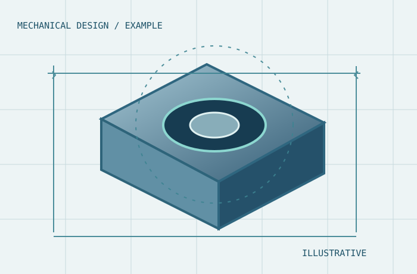

Requirements before design
Resolve purpose, dimensions, inputs and constraints before proposing a technical deliverable.
An emerging independent engineering initiative based in Cantabria, Spain—built around thoughtful design, clear documentation and straightforward remote collaboration.
CantaX Engineering is an independent engineering design initiative led by a graduate in Maritime Engineering with experience in mechanical CAD, industrial product development and technical workflows.
The initiative is currently building a verifiable portfolio and exploring international remote collaboration. Our emphasis is on clear technical outputs rather than corporate scale or marketing claims.
Depending on the scope, work can draw on open-source CAD and Python-based automation. Tool capabilities and file formats are always confirmed before any commitment.
Explore technical capabilities
ENGINEERING SUPPORT / CANTABRIA, SPAINConfidence should come from defined scope, transparent assumptions and deliverables someone else can review—not an invented list of clients, patents or years of company operation.
Resolve purpose, dimensions, inputs and constraints before proposing a technical deliverable.
Use clear versions, naming, annotations and agreed interchange files to help teams audit the work.
No fictitious team, certifications or manufacturing plants. Project-specific qualifications are checked when needed.
Initial conversations establish fit. Any commercial activity would proceed only after the necessary registration, terms and compliance arrangements are in place.
Share the intended outcome, constraints and files required.
Agree assumptions, exclusions, deliverables and revisions.
Use suitable tools and checkpoints to prepare the work.
Provide organized, reviewable outputs.
No. CantaX is a developing independent practice led by one engineer. The professional presentation should not be mistaken for a team or an incorporated company.
STEP, PDF, DXF, CSV and FreeCAD-related formats are potential options depending on the task. Native Siemens NX or Autodesk Inventor output is not offered without appropriate licensing.
Not as a general claim. Any engineering subject to reserved professional attributions, insurance requirements, third-party approval or product regulation needs separate eligibility and responsibility checks.
We first define intended outputs and identify any sensitive files, then agree the safe transfer approach, milestones, review points and final formats.
No. The static site creates a text summary on your device and can open your own email client after an actual contact address is configured. It does not upload attachments, collect analytics or retain submissions on a server.
Send a short brief. We'll first clarify the requirements, deliverables and practical constraints.